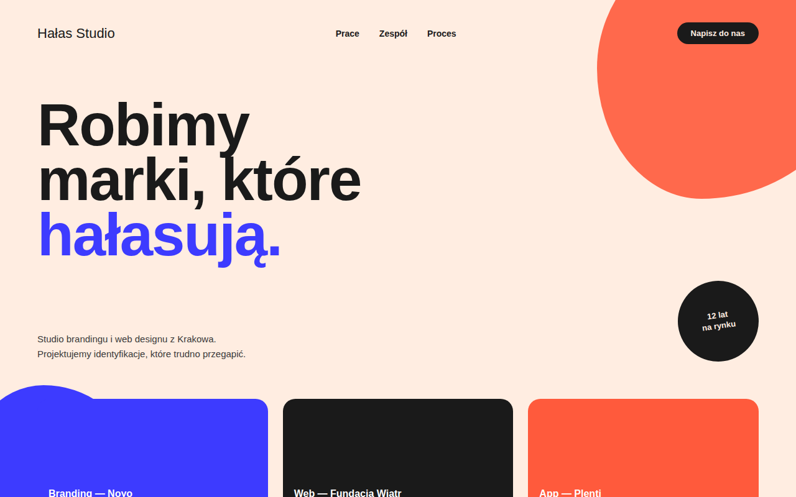

Hałas Studio — landing fikcyjnego studia brandingowego
Najbardziej odważny z trzech projektów — duża typografia, mocne kolory i nieregularne kształty w tle. Ćwiczenie z tego, jak daleko można pójść z kolorem bez utraty czytelności.

Cel projektu
Po dwóch spokojniejszych projektach (kawiarnia, SaaS) chciałem zrobić coś maksymalistycznego — stronę studia kreatywnego, które samo powinno wyglądać odważnie. Inspiracją były strony agencji brandingowych, które nie boją się dużego kontrastu i koloru.
Proces
Zacząłem od typografii — krój Archivo Black w bardzo dużej skali stał się głównym elementem strony. Dodałem dwa nieregularne "blob" kształty w tle (granatowy i pomarańczowy), żeby strona nie była statyczna, a karty projektów na dole pokolorowałem na trzy różne, mocne kolory.
- Trzy mocne kolory: pomarańcz, granat, czarny na tle łamanej bieli
- Organiczne kształty (border-radius z różnymi wartościami na rogach)
- Okrągły "badge" obrócony pod kątem jako element przełamujący siatkę
Czego się nauczyłem
Że w maksymalistycznym designie najtrudniejsze jest zachowanie hierarchii — łatwo o sytuację, w której wszystko "krzyczy" tak samo. Pomogło ograniczenie liczby kolorów do trzech i trzymanie się jednego kroju typograficznego w całym projekcie.